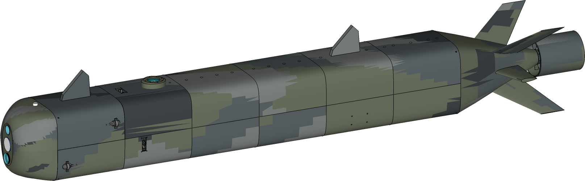
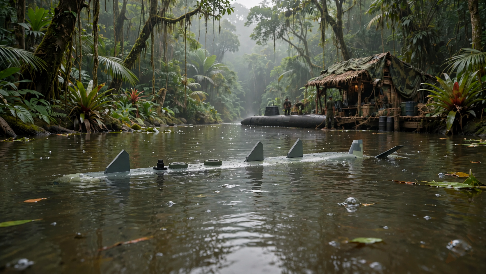
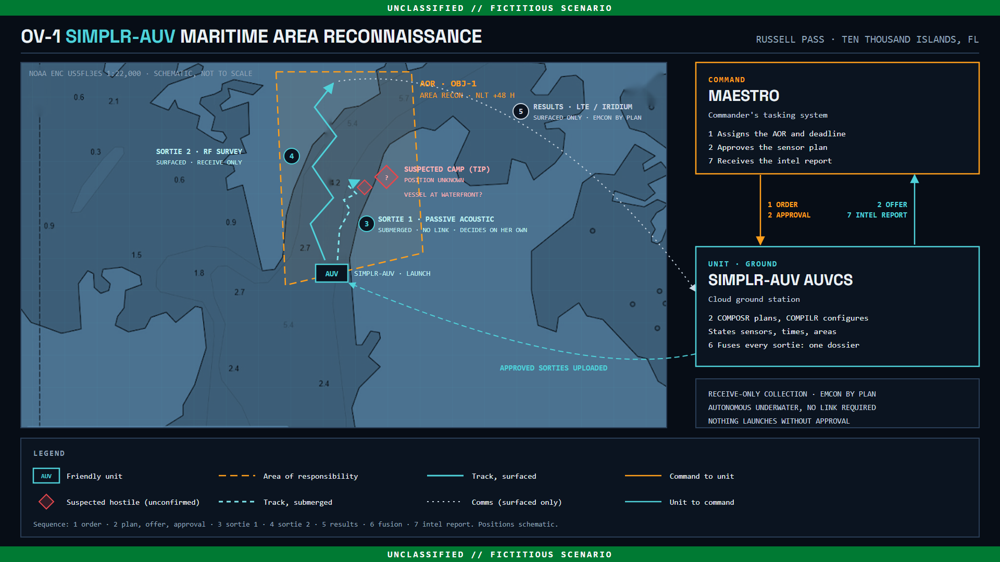

Passive RF Reconnaissance
Detects, identifies, and geolocates radio emitters from a single platform — receive-only, nothing radiated. Communications networks are mapped and how they connect is understood.
PLATFORM · MULTI-SPECTRAL MARITIME RECONNAISSANCE
A small autonomous underwater vehicle that surveys a maritime area of interest and collects its RF, acoustic, and visual picture, then brings it home. Silent the whole time, with operators kept at a safe distance. SIMPLR-AUV is the first platform of the Cognitive Vehicles ecosystem, and it runs that ecosystem end to end in simulation today: from a commander's order to a fused intelligence report.

THE SIMPLR-AUV PLATFORM
SIMPLR-AUV is built to be sent where crewed platforms should not go. Its outer hull is 3-D printed and its electronics, sensors, and energy are commercial off-the-shelf, so vehicles can be built quickly, fielded in numbers, and risked on the mission rather than protected from it.

THE FLAGSHIP MISSION
SIMPLR-AUV conducts maritime reconnaissance across three modalities at once. It surveys an area wide and silent to find every contact of interest, the operator designates the ones that matter, and the vehicle returns to collect them in full for exploitation — all from an unmanned platform, with operators kept at a safe distance.

Detects, identifies, and geolocates radio emitters from a single platform — receive-only, nothing radiated. Communications networks are mapped and how they connect is understood.
Listens for running machinery and propulsion — including low-signature craft that evade other sensors — and closes on what it hears with sonar to find, measure, and map vessels and the structures around them.
Closes on a contact the sonar has found and images it pass by pass at close range, delivering visual confirmation fused with the RF and acoustic picture.
SITUATIONAL AWARENESS
SIMPLR-AUV turns a reconnaissance sortie into one fused product the customer can act on: what is operating in the area, how it is connected, how activity changes over time, and what the vessels and structures there look like — with a plain statement of what the sortie could and could not see.
The emitters, networks, and machinery active in the area, each identified and tracked through the sortie.
Which emitters work together, and the infrastructure and outside links that tie them to the wider world.
When and where activity was observed through the sortie, so patterns and movement stand out on the map.
Contacts found, measured, and imaged by sonar and video, placed alongside everything heard around them.
RF, acoustic, sonar, and video brought together into a single assessment, every statement tied to the evidence behind it.
Each assessment states its confidence and what it could not observe, so decisions rest on what is known.
DEVELOPMENT STATUS
The autonomy stack, GIZMO, the browser mission environment, and the configuration tooling run end to end in simulation on the vehicle's own flight computers, with the simulator on a separate computer feeding them as real sensors would. Prototype vehicle hardware is in development; vehicle-level performance figures remain design targets until controlled physical testing is complete.
ONE ECOSYSTEM · EVERY DOMAIN
For research, integration, teaming, and program inquiries, contact Cognitive Vehicles LLC.
wayne@simplr-auv.comWayne Folsom · Founder & CEO
wayne@simplr-auv.com · (949) 326-4252